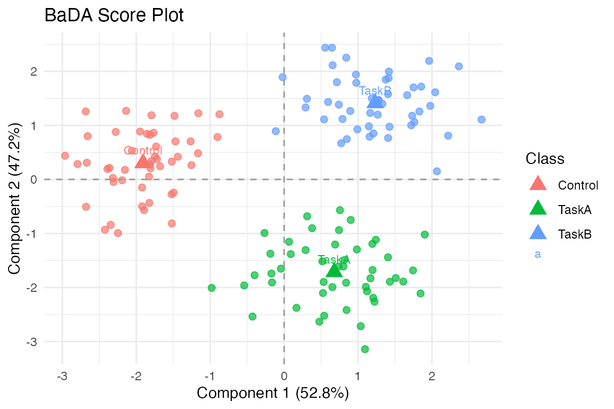

Barycentric Discriminant Analysis
bada.RmdWhy BaDA?
Use bada() when your outcome is categorical and your
measurements are repeated within subjects. The method first builds class
barycenters within each subject, then combines those barycenters into
one discriminant space. That makes it much more natural for
repeated-measures classification problems than collapsing all rows and
pretending they are independent.
In short: BaDA is a supervised multivariate method for class structure that respects subject structure.
What does a quick fit look like?
library(muscal)
library(multivarious)
library(multidesign)
library(ggplot2)
table(design$subj_id, design$y)[1:3, ]
#>
#> Control TaskA TaskB
#> S1 8 8 8
#> S2 8 8 8
#> S3 8 8 8
fit <- bada(md, y = y, subject = subj_id, ncomp = 2)
S <- multivarious::scores(fit)
stopifnot(nrow(S) == nrow(x))
stopifnot(ncol(S) >= 2)
stopifnot(all(is.finite(S)))
sep <- as.matrix(dist(fit$fscores[, 1:2, drop = FALSE]))
off_diag <- sep[upper.tri(sep)]
stopifnot(all(is.finite(off_diag)))
stopifnot(min(off_diag) > 0.5)
round(sep, 2)
#> Control TaskA TaskB
#> Control 0.00 3.28 3.33
#> TaskA 3.28 0.00 3.17
#> TaskB 3.33 3.17 0.00
BaDA separates the three experimental classes while preserving the repeated-measures design through subject-specific preprocessing and barycenters.
The distance matrix above is a compact check that the fitted class barycenters are genuinely separated in the discriminant space.
What is barycentric about the method?
BaDA does not classify directly from raw rows. Instead, it:
- preprocesses each subject block separately,
- computes class barycenters within each subject,
- averages those barycenters across subjects, and
- builds a discriminant space from the resulting class means.
That workflow is what lets the method respect repeated-measures structure while still producing one clean class geometry.
What should you inspect after fitting?
rownames(fit$barycenters)
#> [1] "Control" "TaskA" "TaskB"
length(fit$block_indices)
#> [1] 6The barycenter names tell you which classes define the discriminant space. The block count tells you how many subject-level preprocessing pipelines were used.
How do you project new rows?
new_rows <- x[1:6, , drop = FALSE] + matrix(rnorm(6 * p, sd = 0.1), nrow = 6)
proj <- project(fit, new_rows)
stopifnot(all(dim(proj) == c(6, ncol(fit$v))))
stopifnot(all(is.finite(proj)))
head(proj, 3)
#> [,1] [,2]
#> 1 -1.824206 0.3455320
#> 2 -1.821593 0.8609624
#> 3 -1.820092 0.2496454Projection is useful when you want to score held-out observations in the existing discriminant space rather than refitting the model.
When should you use BaDA?
Use bada() when:
- your target is categorical,
- rows belong to repeated-measures subjects or blocks,
- you want an interpretable discriminant space built from class means, and
- subject structure should affect preprocessing.
Use mfa() or bamfa() instead when the
problem is unsupervised.
Where next?
-
?badafor bootstrap and residual-analysis options -
vignette("bamfa")for the unsupervised barycentric analogue -
vignette("mfa")for the simpler unsupervised same-row case